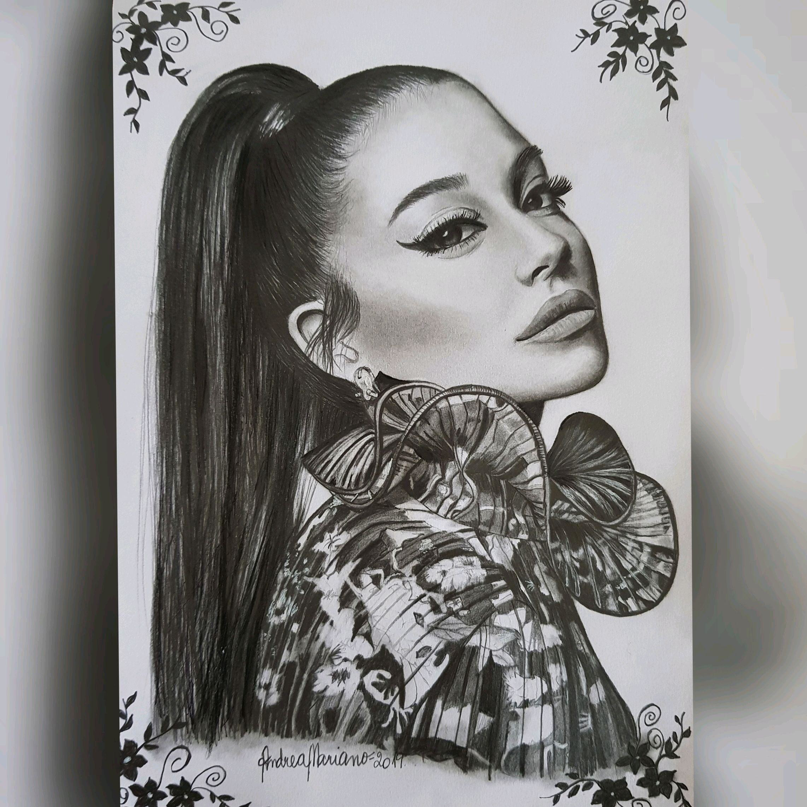
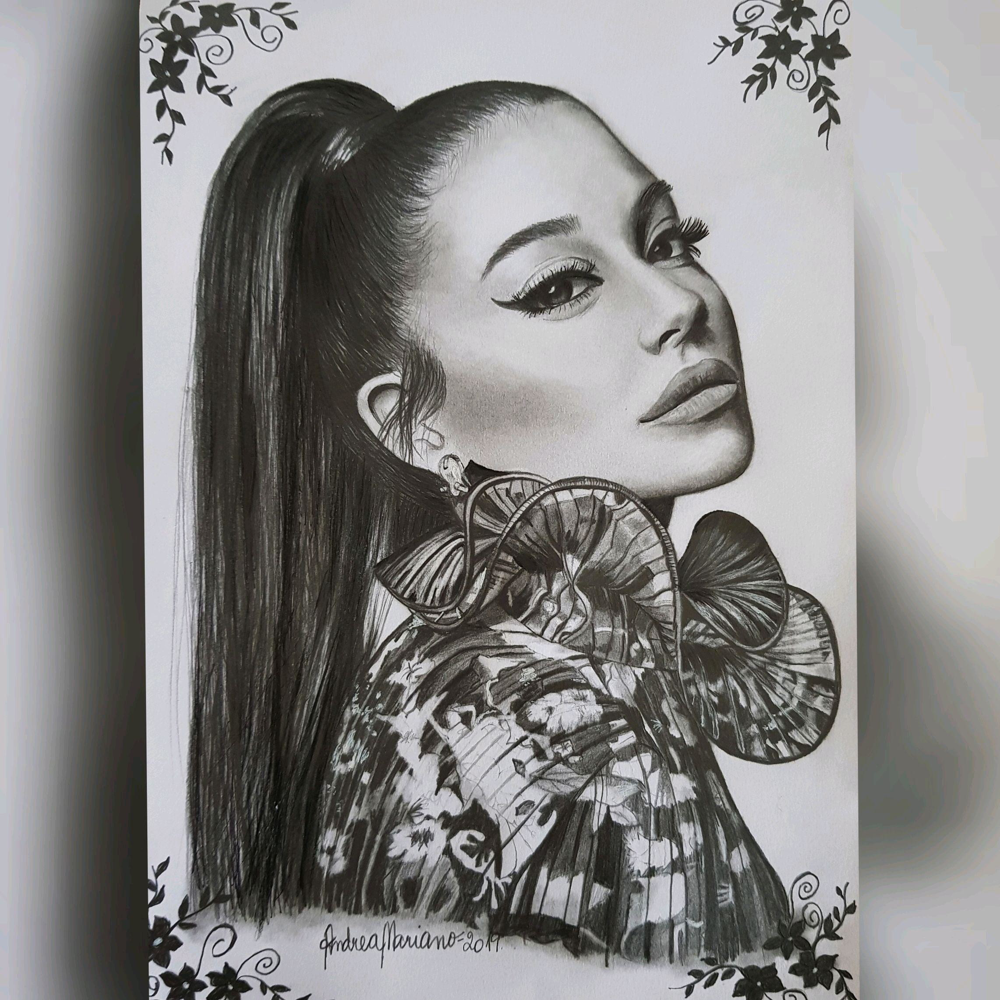

desenho e tipos deles
Quanto mais estilos de desenho você conhecer e experimentar, mais você será capaz de desenvolver e aperfeiçoar seu próprio estilo. Desenhar é uma das formas mais criativas que a humanidade encontrou para se expressar, uma atividade universal que aprendemos antes mesmo de falar e que pode desempenhar várias funções. Essa versatilidade faz do desenho uma forma de arte muito variada, que permite aos desenhistas adaptarem suas técnicas de infinitas maneiras, conforme as suas particularidades. Desenho artístico e desenho técnico Antes de apresentarmos nosso top 15 com os principais estilos de desenho, vamos a uma breve explicação sobre as diferenças entre desenho artístico e desenho técnico: Desenho artístico: oferece uma liberdade criativa maior ao desenhista, que pode expressar emoções e até manipular a realidade para expressar sua sensibilidade e atingir o observador. Desenho técnico: exige mais precisão, exatidão e respeito às regras do desenhista. Seu objetivo é descrever e representar uma ideia para facilitar o trabalho dos profissionais envolvidos, principalmente nos ramos da arquitetura e engenharia. É realizado por pessoas com formação técnica, pois envolve o uso de códigos e procedimentos específicos de cada área. Top 15 estilos de desenho Para te ajudar a testar novos traços e encontrar referências cada vez mais inspiradoras, listamos os estilos de desenho mais populares, suas principais características e algumas dicas de materiais para você se aventurar em novas técnicas! 1. Desenho de observação Seu objetivo é reproduzir um modelo de forma idêntica a partir da sua observação direta. Para isso, é necessário colocar em prática técnicas de sombra e luz, proporção e perspectiva, por exemplo. Contudo, a dica mais importante é que você precisa focar unicamente na observação, sem julgar, sem raciocinar e registrando somente o que os seus olhos estão vendo. Quanto mais praticar e desenvolver seu senso de observação, mais fácil será colocar no papel as ideias que estão na sua cabeça! Sugestões de material: lápis 2B, 4B e 6B, canetas nanquim ou ponta porosa preta: fina, média e grossa. 2. Desenho de memorização Seu ponto de partida, como o próprio nome já diz, é a memória. É a representação gráfica baseada na forma dos elementos que já foram previamente visualizados. É preciso acessar seu repertório de lembranças e confiar apenas nele para desenhar! A qualidade dos detalhes vai depender muito do seu nível de observação e da sua bagagem cultural. Sugestões de material: lápis 2B, 4B e 6B, canetas nanquim ou ponta porosa preta: fina, média e grossa. 3. Desenho realista Muito utilizado antes da popularização da máquina fotográfica, o desenho realista é um método à lápis que tenta produzir uma imagem nítida, o mais próxima da realidade possível, ou seja, que transmita a sensação de estarmos olhando para uma foto. Era a técnica usada pelos desenhistas de retratos de família, por exemplo. Sugestões de material: lápis, caneta borracha, esfuminho, pincel e boleador. Clique aqui para conferir nosso artigo completo com dicas para aperfeiçoar seu desenho realista. 4. Desenho abstrato Dividido em duas vertentes, o abstracionismo geométrico e o informal, o desenho abstrato não está preocupado com as formas reais das coisas. Seu objetivo é transmitir emoções e sentimentos em seus traços e cores. O abstracionismo informal, também chamado de lírico ou expressivo, não apresenta estilo uniforme e está inspirado no instinto, na presença dos elementos sentimentais como a intuição. Por outro lado, o abstracionismo geométrico, com grande influência do cubismo, busca expressar emoções com formas geométricas e as características mais duras de cada forma. Sugestões de material: lápis, caneta borracha, esfuminho, canetas Stabilo e similares. 5. Desenho a mão livre É o desenho produzido sem nenhuma outra ferramenta além do lápis e papel. Seus traços não precisam ser perfeitos, pois servem para estimular a criatividade do desenhista, melhorando seu senso de direção. O desenho à mão livre é muito utilizado por arquitetos no processo de criação dos projetos mais inovadores e conceituais. Para treinar essa técnica, dedique um tempo para desenhar projetos em perspectiva e pratique desenho de observação. Sugestões de material: lápis 2B, 4B e 6B, canetas nanquim ou ponta porosa preta: fina, média e grossa. 6. Mangá No Mangá, de origem japonesa, o contorno recebe muito mais atenção que os detalhes. Seus traços são limpos e finos, as cores são claras e flat (chapadas) e as sombras são bem marcadas para criar profundidade e volume. Os olhos são sempre grandes, enquanto o nariz e a pouco são pouco definidos. Os cabelos são divididos em mechas e bem arrepiados. Capriche na pose bem forçada, pois esse é o traço mais marcantes desse estilo de desenho! Sugestões de material: lápis H, 2B, 4B e 6B 7. Caricatura Aqui a palavra-chave é exagerar! A caricatura evidencia as características físicas e comportamentais das pessoas, sempre de maneira bem humorada. Seus traços são usados conforme a necessidade do artista, às vezes mais fortes e outras bem finos. Em algumas circunstâncias, uma boa caricatura acentua gestos, vícios e hábitos do personagem em questão, mas lembre-se: exagero não é ridicularização! Desenhistas em eventos costumam produzir caricaturas em branco e preto, até por conta do tempo disponível, mas as versões coloridas são ainda mais realistas e divertidas. Sugestões de material: lápis preto 6B, lápis preto 2B, caneta Pilot Color 850, lápis pastel seco para colorir. 8. HQ Além de criarem personagens incríveis, com formas e cores realistas, traços leves e claros, sombras e brilhos bem marcados, os artistas de HQ também usam vários recursos gráficos como diferentes formas de quadros, balões e letras para transportar os leitores para o universo de cada história. Pode apostar nas hachuras, aquelas linhas paralelas ou cruzadas, para dar mais dinâmica ao desenho.
Chibi
Esse é o estilo de desenho mais “cute cute” deste artigo! A orientação principal é misturar traços de adulto com uma boa dose de fofura infantil. As formas arredondadas, como o cabeção e os olhos gigantes são inspirados nas crianças, enquanto as poses e expressões faciais vêm dos adultos.
Qualquer semelhança com o estilo cartoon e a toy art não é coincidência! Também é muito comum perceber a pouca definição e até a ausência do nariz e da boca dos personagens.
Doodle Art
Sabe aquele desenho que você faz enquanto está ouvindo alguém no telefone? Aquele desenho é um doodle, que você também pode chamar de rabisco. Embora o doodle seja um tipo de desenho despretensioso, que pode ou não ter formas definidas, sua principal característica é o equilíbrio entre elementos abstratos e elementos concretos.
Sendo assim, pode até ser um rabisco, mas é um rabisco organizado, com uma variação de traços e contrastes. Você pode fazer um doodle agora mesmo com caneta e papel, mas também vai encontrar umas versões colorizadas muito interessantes. Vale a pena buscar no Google e se surpreender com os resultados! Sugestões de material: caneta Stabilo (0,4) para traços finos, caneta Pilot Color 850 para traços médios, caneta fude pen para traços grossos e preenchimento.
Desenho realista
 
